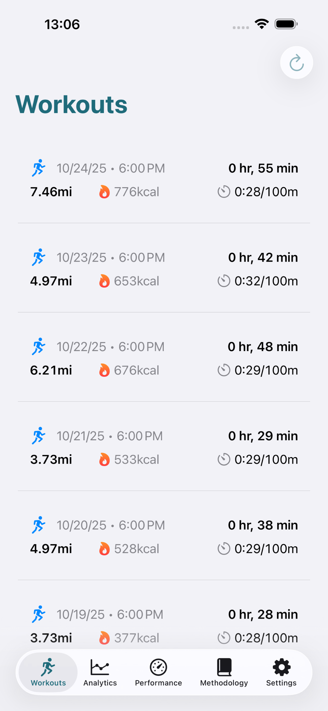
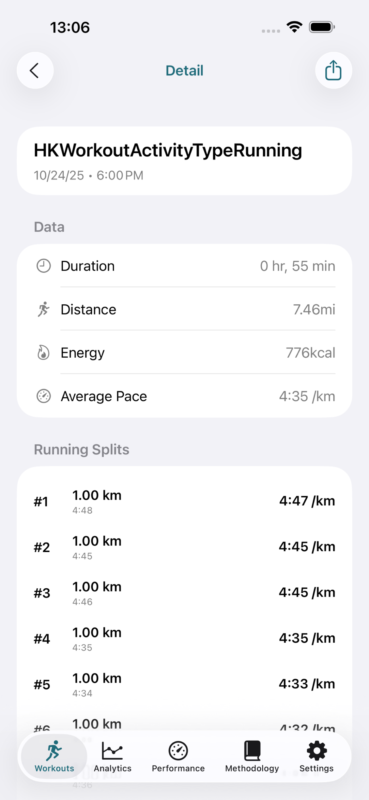
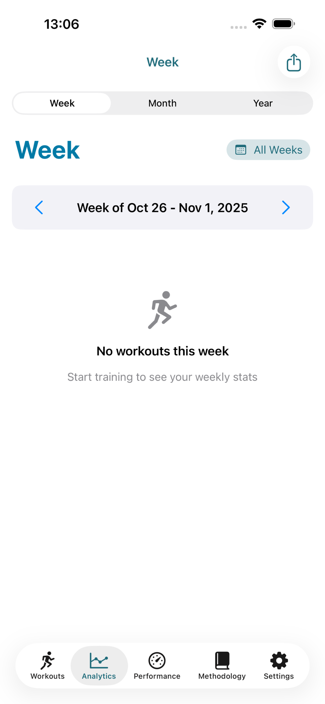
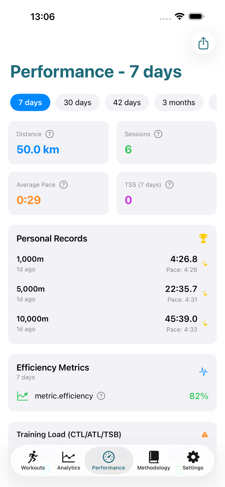
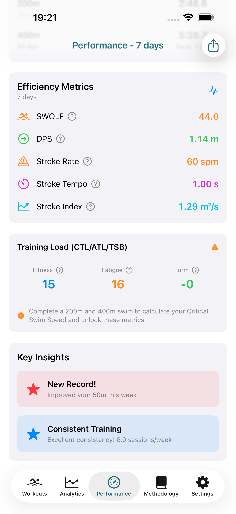
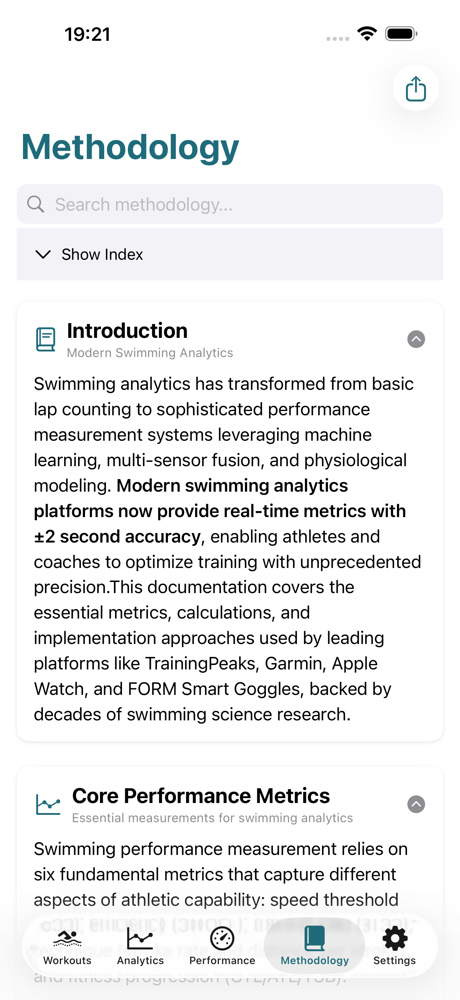

Yi Horon Wayo, Gudu Da Sauri
Aikace-aikacen iOS mai ba da fifiko ga sirri tare da ma'aunin aikin gudu na kimiyya, yankuna horo na musamman, da cikakken bin diddigin aiki. Duk ana sarrafa su a cikin iPhone dinku tare da cikakken sirrin bayanai.
✓ Gwajin kwanaki 7 kyauta ✓ Ba a buƙatar asusu ✓ 100% bayanan gida

Ci gaban Ma'aunin Gudu
Binciken gudu na matakin ƙwararru wanda aka tsara don masu gudu a kowane mataki
Ma'aunin Gudu na Kimiyya
Muhimmin Gudun Gudu (CRS) yana tantance iyakar motsa jiki na ku, yana ba da damar lissafin Makin Damuwar Horo (TSS) da bibiyar aikin CTL/ATL/TSB bisa ingantaccen binciken kimiyyar wasanni.
Yankunan Horo na Musamman
7 na musamman yankunan horon gudu waɗanda aka daidaita zuwa ga muhimmin gudun ku. Inganta kowane motsa jiki don farfadowa, ci gaban motsa jiki, horon iyaka, ko haɓaka VO₂max.
Kwatanta Aiki
Kwatancen mako-mako, wata-wata, da shekara-shekara tare da gano yanayin atomatik da canje-canje na kashi don duk ma'aunin aikin gudu.
Cikakken Kariyar Sirri
Duk bayanan gudu ana sarrafa su a cikin na'urar ku ta iOS. Babu sabobin, babu ajiyar girgije, babu bin diddigin. Kuna da kuma sarrafa binciken ku na gudu gaba daya.
Fitarwa Zuwa Ko'ina
Fitar da motsa jiki da ma'aunin aikin gudu a cikin JSON, CSV, HTML, ko tsarin PDF. Ya dace da masu horarwa, ma'auni, da dandamali na horo.
Aiki Nan take
Kaddamar da app a cikin kasa da 0.35s tare da ginin gida-farko. Duba binciken ku na gudu nan take ba tare da jiran aiki tare ko zazzagewa ba.
Duba Run Analytics a Aiki
Kyakkyawan, keɓaɓɓen ƙirar iOS da aka tsara don masu gudu
Binciken Ayyuka

Binciken Kilomita-da-Kilomita

Babban Ma'aunin Aiki

Yanayin Ayyuka

Yankunan Horo

Zaɓuɓɓukan Fitarwa
Ma'aunin Ingancin Gudu na Kimiyya
Run Analytics yana canza danyen bayanan gudu zuwa ma'aunin aikin gudu mai amfani ta amfani da Makin Damuwar Horo, Muhimmin Gudun Gudu, da lissafin inganci da binciken kimiyyar wasanni ya tabbatar
Zurfafa zurfafa cikin Ma'aunin Ingantaccen Gudu →CRS
Muhimmin Gudun Gudu - takin iyakar motsa jiki na ku
TSS
Makin Damuwar Horo yana auna ƙarfin motsa jiki
CTL
Nauyin Horo na Yau da Kullum - matsakaicin motsi na kwanaki 42
ATL
Matsanancin Nauyin Horo - matsakaicin motsi na kwanaki 7
TSB
Ma'aunin Damuwar Horo yana nuna shirye-shirye
Ingancin Gudu
Makin ingancin tafiya - ƙasa ya fi kyau
Yankuna 7
Matakan ƙarfi daga Farfadowa zuwa Gudu
PR
Bin diddigin rikodin sirri na atomatik
Mai Sauƙi, Farashi Mai Gaskiya
Fara da gwajin kwanaki 7 kyauta. Soke kowane lokaci.
Wata-wata
Gwajin kwanaki 7 kyauta
- Aiki tare na motsa jiki marar iyaka
- Duk ma'aunin kimiyya (CRS, TSS, CTL/ATL/TSB)
- 7 yankunan horo na musamman
- Kwatancen mako-mako, wata-wata & shekara-shekara
- Fitarwa a JSON, CSV, HTML & PDF
- 100% sirri, bayanan gida
- Duk sabuntawa na gaba
Shekara-shekara
Ajiye €8.88/shekara (rangwamen 18%)
- Aiki tare na motsa jiki marar iyaka
- Duk ma'aunin kimiyya (CRS, TSS, CTL/ATL/TSB)
- 7 yankunan horo na musamman
- Kwatancen mako-mako, wata-wata & shekara-shekara
- Fitarwa a JSON, CSV, HTML & PDF
- 100% sirri, bayanan gida
- Duk sabuntawa na gaba
- Kawai €3.25/wata
Binciken Gudu Mai Ba da Fifiko ga Sirri don Kwararrun 'Yan Wasa
Ma'aunin aikin gudu na matakin ƙwararru ba tare da rikitarwa ba
Tsarin Gwajin CRS
Hadaddiyar tsarin gwajin 1200m/3600m don tantance muhimmin gudun ku. Maimaita kowane mako 6-8 don bin diddigin ci gaba da daidaita yankunan horon gudu ta atomatik.
Aikace-aikacen Gudu na 'Yan Asalin iOS
An gina shi tare da SwiftUI don aiki mai kyau da haɗin iOS. Cikakken aiki tare da App na Lafiya don binciken gudu, tallafin widget, da sanannen yaren ƙira na Apple.
Ma'aunin da Aka Gine kan Bincike
Duk ma'auni sun dogara ne akan binciken kimiyya da aka bita da takwarorinsu. CRS daga Wakayoshi et al., TSS da aka daidaita don gudu tare da tsarin IF², ingantattun ƙirar CTL/ATL.
Rahotanni Masu Kyau ga Masu Horarwa
Fitar da cikakken rahotanni ga masu horarwa. Raba taƙaitaccen HTML ta imel, CSV don binciken ma'auni, ko PDF don rajistar horo da bayanai.
Yana Aiki Ko'ina
Wanda aka bi ko hanya, gudu ko nisa. Run Analytics yana daidaita ma'aunin ingancin gudu zuwa kowane nau'in gudu kuma yana gano halayen motsa jiki ta atomatik.
Koyaushe Ingantawa
Sabuntawa na yau da kullun tare da sabbin fasalolin aikin gudu bisa ra'ayoyin masu amfani. Ƙarin kwanan nan sun haɗa da kwatancen shekara-shekara, bin diddigin rikodin sirri, da ingantattun zaɓuɓɓukan fitarwa.
Tambayoyin da ake Yawan Yi
Ta yaya wannan app na binciken gudu ke samun bayanai na?
Run Analytics yana aiki tare da Apple Health don shigo da ayyukan gudu da aka yi rikodin ta kowace na'ura mai jituwa ko app. Wannan ya haɗa da agogon smart, masu bin diddigin motsa jiki, da shigarwar hannu. App ɗin yana sarrafa wannan bayanan a gida don lissafin ci gaban ma'aunin aikin gudu.
Menene gwajin Muhimmin Gudun Gudu kuma ta yaya zan yi?
Muhimmin Gudun Gudu (CRS) tsarin kimiyya ne ta amfani da 2 matsakaicin ƙoƙarin gudu: 5K da 3K tare da hutun minti 10-20 tsakanin. App ɗin yana lissafin iyakar motsa jiki na ku daga waɗannan lokutan kuma yana daidaita duk yankunan horon gudu ta atomatik. Maimaita kowane mako 6-8 don bin diddigin ci gaba.
Shin an ɗora bayanan gudu na zuwa gajimare?
A'a. Run Analytics yana sarrafa duk bayanan gudu a cikin iPhone ɗinku. Babu sabobin waje, babu asusun girgije, babu canja wurin bayanai. Kuna sarrafa fitarwa: samar da fayilolin JSON, CSV, HTML, ko PDF tare da ma'aunin aikin gudu na ku kuma raba yadda kuke so.
Zan iya amfani da wannan app na binciken gudu don gudun hanya?
Ee. Run Analytics yana aiki tare da kowane aikin gudu a Apple Health, gami da gudun hanya. App ɗin yana daidaita ma'aunin ingancin gudu zuwa bayanan da ake samu, ko kuna kan hanya ko hanya, kuma yana ba da binciken aiki mai dacewa ga kowane yanayi.
Menene bambanci tsakanin tsare-tsaren kowane wata da na shekara?
Dukansu tsare-tsaren suna ba da fasali iri ɗaya: duk ma'aunin aikin gudu, yankunan horo marasa iyaka, kwatancen lokaci, fitarwa da yawa, da sabuntawa kyauta. Bambanci kawai shine farashi: shekara-shekara yana adana muku 18% (daidai da €3.25/wata vs €3.99/wata).
Zan iya soke biyan kuɗi na a kowane lokaci?
Ee. App Store ne ke sarrafa biyan kuɗi, don haka kuna iya soke kowane lokaci daga Saituna → [Sunan ku] → Biyan kuɗi. Idan kun soke, zaku ci gaba da samun dama har zuwa ƙarshen lokacin biyan kuɗi na yanzu.
Shirye don Canza Aikin Gudun Ku?
Kasance tare da dubban masu gudu ta amfani da binciken gudu na kimiyya don inganta aiki. Fara gwajin kwanaki 7 na kyauta na wannan app na gudu na iOS mai ba da fifiko ga sirri yau.
Ƙara Koyo Game da Ma'aunin Aikin Gudu
Zurafafa cikin kimiyyar da ke bayan binciken gudu
Muhimmin Gudun Gudu
Fahimci yadda Muhimmin Gudun Gudu ke tantance iyakar motsa jiki na ku da kuma dalilin da yasa yake da mahimmanci ga ingantaccen horo.
Koyi game da CRS →Makin Damuwar Horo
Gano yadda TSS, CTL, ATL, da TSB ke taimaka muku daidaita damuwar horo, sarrafa gajiya, da inganta aiki.
Bincika TSS →Yankunan Horo An Bayyana
Cikakken jagora ga yankunan horo 7: farfadowa, aerobic, lokaci, iyaka, VO2max, da anaerobic.
Duba Yankunan Horo →Menene VO2max?
Koyi game da VO2max, yadda ake gwada shi, matsakaicin ƙima ta zamani, da ingantattun hanyoyin haɓaka ƙarfin motsa jiki na ku.
Fahimci VO2max →Marathon Periodization
Jagora matakan horo: ginin tushe, gini, kololuwa, da tapering don nasarar marathon tare da tsari na kimiyya.
Tsara Horon Ku →Dokar Horo na 80/20
Gano ingantaccen rarraba 80% mai sauƙi, 20% mai wuya wanda fitattun masu gudu ke amfani da shi don sakamako mafi kyau.
Koyi 80/20 →Run Analytics: Yi Horarwa da Wayo, Gudu Mafi Sauri
Manhajar iOS mai kare sirri tare da kimiyyar lissafin gudu, yankunan horarwa na musamman, da cikakken bibiyar aiki don kowane mai gudu.
- 2026-03-04
- manhajar gudu · binciken gudu · bayanai na aiki · kalkuleta CRS · maki na matsin horarwa
- Littattafai